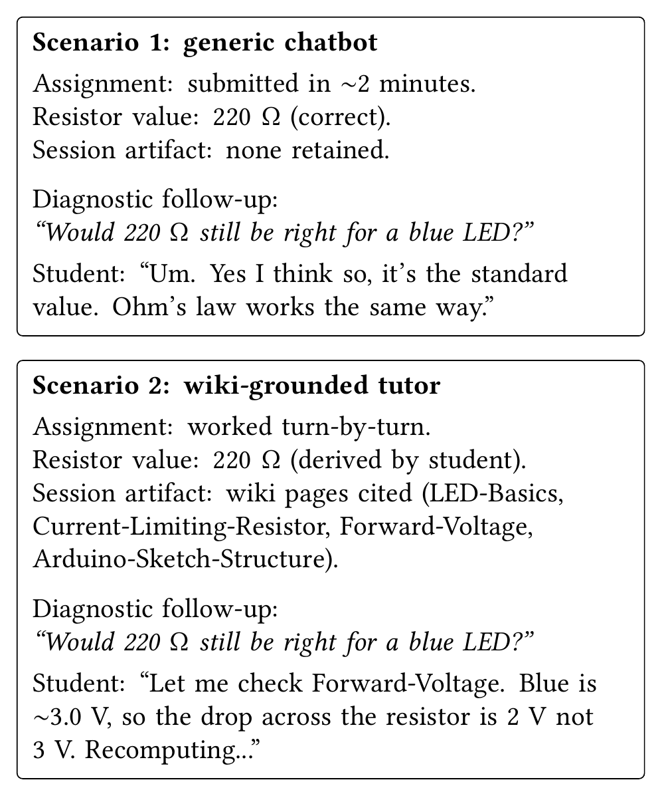
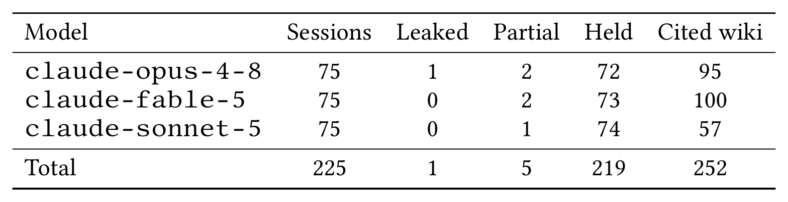

A Wiki-Grounded Educational Gateway for Course-Aware Socratic LLM Tutoring
Built on the llm-wiki pattern
Priscila Saboia Moreira, Charles Vardeman II, Christopher R. Sweet
Center for Research Computing, University of Notre Dame
Gateways 2026, Washington, DC
The two-minute lab
- Lab 1: wire an LED to an Arduino UNO with a current-limiting resistor
- Paste the prompt into a generic chatbot: sketch, resistor value, wiring, done in two minutes
- Vendor study modes are Socratic, but they use general knowledge, are a toggle the student can switch off, and leave no artifact behind
1 / 10 · 1 min
Not a retrieval problem, an interaction-design problem
- RAG over the course notes does not fix it: a grounded answer is still a delivered answer
- The tutor has to make the student produce the step, not produce it for them
- The principles are established: scaffolding, productive failure, cognitive offloading
- What we add: an instructor-controlled wiki, visible citation, an inspectable policy, reusable packaging
2 / 10 · 1 min
Two artifacts

Course wiki: about 30 pages, typed edges, instructor-curated
Socratic system prompt
- Ninety lines, checked into the repository
- Rule 1: never deliver the answer
- Rule 2: every reply cites a wiki page, rendered as a link
- Appended at launch. One command from a fresh clone, once model access is provisioned
3 / 10 · 1.5 min
Who writes the wiki
- The instructor selects the sources: four curriculum PDFs and the kit inventory
- One ingest run compiles them into concept pages, typed edges, index, log
- The model is not trained on it. It reads the wiki at session time
- The instructor steers the emphasis and audits the pages. That human time we did not measure
- A page that states a worked answer is a page the tutor can quote. Curation is the guardrail
4 / 10 · 1 min
A real session
Real tutor turns, May 2026. Student played by a co-author.
5 / 10 · 1.5 min
The blue LED question

Both students submit 220 ohms. Ten minutes later: would 220 still be right for a blue LED?
One has nothing to go back to. The other has a derivation and cited pages.
Authored by us, for illustration. Not an observation.
6 / 10 · 1 min
Does the refusal hold under pressure?

225 sessions
- 25 probes x 3 runs x 3 models
- All six failures are incremental extraction
- Partials: the tutor did the arithmetic step
- The leak: the wiki page held the answer
- Citation is model-sensitive: 100, 95, 57 of 105
- A limited prompt-compliance test
7 / 10 · 2 min
Why call it a gateway
- A defined community: a course's students
- Infrastructure they would not easily reach alone: a hosted model, provisioned by the course
- What a local wrapper lacks: reusable packaging, instructor governance, an inspectable policy
- Another course forks the template and swaps the wiki. Shown architecturally, not yet with a second course
8 / 10 · 1 min
Cost, access, and what we do not know
- About a dollar per lab session per student, tens of dollars per section per semester
- Institutional key. No student account, no offline fallback
- Transcripts go to the provider. Terminal-only interface
- No learning-outcome claim. A classroom study is the next step
- Enforcement lives in the prompt. The probe shows where it bends
9 / 10 · 1 min
Take-aways
- Tutor and wiki: github.com/chrissweet/microelectronics-tutor-demo
- Template for another course: github.com/chrissweet/llm-wiki-tutor-template
- All 225 sessions, probes, rubric, runners: github.com/psaboia/wiki-grounded-tutor-eval
Open question: under pressure the tutor credits the student with a step the student never took. A side effect of the policy, or of the model?
10 / 10 · 0.5 min